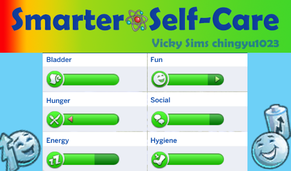
Smarter Self-Care

Run when busting to pee!
快尿出來用跑的
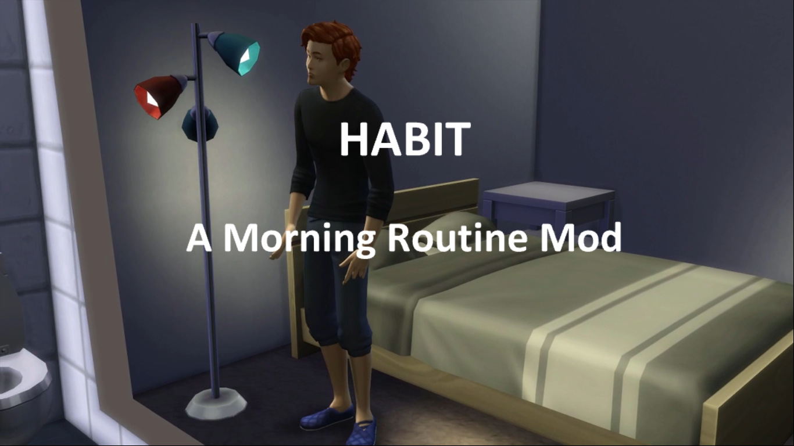
Auto Pause On Pie Menu
打開選單自動暫停遊戲
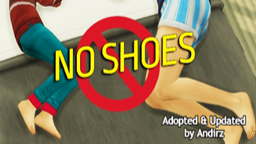
Take It Off: No Shoes! No Accessories!
脫掉鞋襪和配件再睡覺打瞌睡
需下載LOT51核心庫
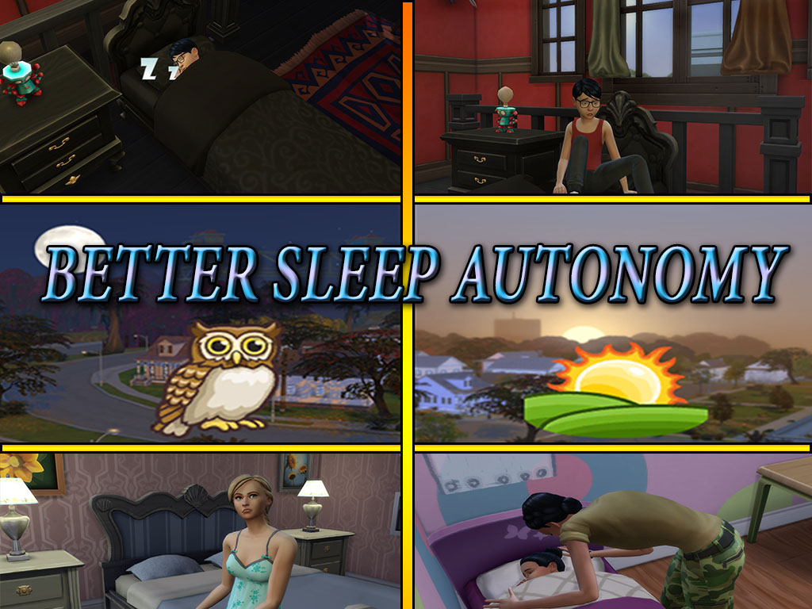
Better Sleep Autonomy
更好的自主睡眠
需下載XML注入器
★ 為目前已下載檔案
其他附加檔案 (可根據自己的需求下載 )
2種核心檔案請擇一下載
Main.zip
⤷ 只能在活躍家庭的住宅睡覺 (舊版)
★ MainV2.zip
⤷ 任何有床的地方都可以睡覺 (新版)
3種整合版本請擇一下載
Merged-All.zip
⤷ 完整功能 (不需要再下載核心及其他檔案)
Merged-All-NoVampires.zip
⤷ 完整功能，不含吸血鬼 (不需要再下載核心及其他檔案)
Merged-Toddlers.zip
⤷ 僅整合幼兒功能
喚醒機制請擇一下載
★ WakeUp (Vampire Support).zip
⤷ 改善模擬市民的自主起床時間判定
WakeUp (No Vampire Support).zip
⤷ 改善模擬市民的自主起床時間判定，不含吸血鬼
幼兒起床機制請擇一下載
★ Toddlers.zip
+
★ ToddlersWakeUp.zip
⤷ 幼兒會依照睡眠需求自主起床與就寢
Toddlers_DefaultWakeUp.zip
⤷ 保留EA邏輯，僅修改幼兒睡眠判定，不改變起床方式
其他可自由選擇搭配下載
★ ToddlersExtras.zip
⤷ 額外優化幼兒自主作息與睡眠行為
★ Morning&Night.zip
⤷ 增加「白天活動、夜晚休息」規則，提升作息規律性
★ Moods.zip
⤷ 小人的情緒狀態與睡眠掛鉤，模擬真實睡眠品質
LifeSkills.zip
⤷ 責任感等人格特質影響睡眠 (需要生兒育女DLC)
Vampires.zip
⤷ 調整吸血鬼專屬睡眠需求與自主行為 (需要吸血鬼DLC)
Main.zip
⤷ 只能在活躍家庭的住宅睡覺 (舊版)
★ MainV2.zip
⤷ 任何有床的地方都可以睡覺 (新版)
3種整合版本請擇一下載
Merged-All.zip
⤷ 完整功能 (不需要再下載核心及其他檔案)
Merged-All-NoVampires.zip
⤷ 完整功能，不含吸血鬼 (不需要再下載核心及其他檔案)
Merged-Toddlers.zip
⤷ 僅整合幼兒功能
喚醒機制請擇一下載
★ WakeUp (Vampire Support).zip
⤷ 改善模擬市民的自主起床時間判定
WakeUp (No Vampire Support).zip
⤷ 改善模擬市民的自主起床時間判定，不含吸血鬼
幼兒起床機制請擇一下載
★ Toddlers.zip
+
★ ToddlersWakeUp.zip
⤷ 幼兒會依照睡眠需求自主起床與就寢
Toddlers_DefaultWakeUp.zip
⤷ 保留EA邏輯，僅修改幼兒睡眠判定，不改變起床方式
其他可自由選擇搭配下載
★ ToddlersExtras.zip
⤷ 額外優化幼兒自主作息與睡眠行為
★ Morning&Night.zip
⤷ 增加「白天活動、夜晚休息」規則，提升作息規律性
★ Moods.zip
⤷ 小人的情緒狀態與睡眠掛鉤，模擬真實睡眠品質
LifeSkills.zip
⤷ 責任感等人格特質影響睡眠 (需要生兒育女DLC)
Vampires.zip
⤷ 調整吸血鬼專屬睡眠需求與自主行為 (需要吸血鬼DLC)
★ 為目前已下載檔案
A Morning Routine Mod
起床例事
可自訂模擬市民起床後的固定流程
若中途與其他市民交流會被打斷
若中途與其他市民交流會被打斷
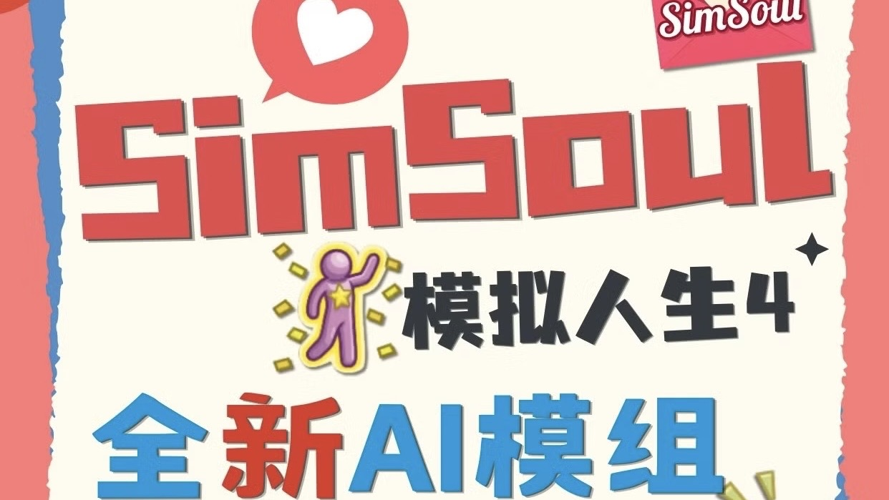
SimSoul
AI 模組
需下載XML注入器
使用期間需保持 SimSoul Desktop 開啟才會生效
ChatGPT Plus ≠ OpenAI API
Plus 會員不能直接拿來給 SimSoul 用
QQ二群：963187757 (SimSoul 專屬 )
⤷ 群內可搶先體驗最新測試版
使用期間需保持 SimSoul Desktop 開啟才會生效
SimSoul Desktop 的 AI配置 (以OpenAI為例 )
1.前往 OpenAI Platform 並登入帳號
2.進入 API Keys 點擊 Create new secret key
3.建立後立即複製並保存 API Key
OpenAI API Key 通常長得像：sk-xxxxxxxxxxxxxxx
⚠️出於安全原因，API Key建立後通常無法再次完整查看，請務必保存好不亂傳
4.前往 OpenAI Billing Overview 進行儲值 (單次最低6美元)
⚠️需要有 API 額度才可以接入使用此 AI 功能，
API 並非免費服務，使用量越多消耗越快
5.將 API Key 貼到 SimSoul Desktop 的 API Key 欄位
2.進入 API Keys 點擊 Create new secret key
3.建立後立即複製並保存 API Key
OpenAI API Key 通常長得像：sk-xxxxxxxxxxxxxxx
⚠️出於安全原因，API Key建立後通常無法再次完整查看，請務必保存好不亂傳
4.前往 OpenAI Billing Overview 進行儲值 (單次最低6美元)
⚠️需要有 API 額度才可以接入使用此 AI 功能，
API 並非免費服務，使用量越多消耗越快
5.將 API Key 貼到 SimSoul Desktop 的 API Key 欄位
ChatGPT Plus ≠ OpenAI API
Plus 會員不能直接拿來給 SimSoul 用
QQ二群：963187757 (SimSoul 專屬 )
⤷ 群內可搶先體驗最新測試版

Slice of Life Mod
真實生活片段
備用載點 ｜無
所需DLC ｜化妝效果需要「復古經典」(非必要)
下載版本 ｜v1.2
下載日期 ｜2026.05.19
其他附加檔案 (可根據自己的需求刪減 )
不需要美容功能請刪除
「Slice of Life ♡ Beauty Features」資料夾
&
「[KawaiiStacie] Beauty & Fashion Features.ts4script」
不需要酒精功能請刪除
「Slice of Life ♡ Fun Juice Features」資料夾
&
「[KawaiiStacie] Fun Juice Features.ts4script」
不需要健康功能請刪除
「Slice of Life ♡ Health Features」資料夾
&
「[KawaiiStacie] Health Features.ts4script」
不需要回憶功能請刪除
「Slice of Life ♡ Memories」資料夾
&
「KawaiiStacie ♡ My Memories.ts4script」
不需要經期功能請刪除
「Slice of Life ♡ Menstrual Cycle」資料夾
&
「[KawaiiStacie] Menstrual Cycle.ts4script」
不需要自我嘿咻功能請刪除
「Slice of Life ♡ Alcohol Features」資料夾
不需要性格功能請刪除
「Slice of Life ♡ Personality」資料夾
&
「KawaiiStacie ♡ My Personality.ts4script」
「Slice of Life ♡ Beauty Features」資料夾
&
「[KawaiiStacie] Beauty & Fashion Features.ts4script」
不需要酒精功能請刪除
「Slice of Life ♡ Fun Juice Features」資料夾
&
「[KawaiiStacie] Fun Juice Features.ts4script」
不需要健康功能請刪除
「Slice of Life ♡ Health Features」資料夾
&
「[KawaiiStacie] Health Features.ts4script」
不需要回憶功能請刪除
「Slice of Life ♡ Memories」資料夾
&
「KawaiiStacie ♡ My Memories.ts4script」
不需要經期功能請刪除
「Slice of Life ♡ Menstrual Cycle」資料夾
&
「[KawaiiStacie] Menstrual Cycle.ts4script」
不需要自我嘿咻功能請刪除
「Slice of Life ♡ Alcohol Features」資料夾
不需要性格功能請刪除
「Slice of Life ♡ Personality」資料夾
&
「KawaiiStacie ♡ My Personality.ts4script」
RPO關係與懷孕大修
備用載點 ｜無
所需DLC ｜無
下載版本 ｜v2.986
下載日期 ｜2026.05.06
M0_CoreLibrary ➜ 必裝核心檔案
★ 為目前已下載檔案
其他附加檔案 (可根據自己的需求下載 )
M1_PregnancyPreferences&Impact ➜ 家庭偏好和懷孕反應
M2_Fertility&Protection ➜ 生育與保護
M3_WooHooTransmittedDiseases ➜ 嘿咻傳染病
M4_PaternityTesting ➜ 親子鑑定和事件
★ M5_TeenPregnancy ➜ 青少年懷孕和反應
M6_TemporarySeparations ➜ 臨時分居 / 關係破裂
M7_Cheating (Infidelity) Expansion & Overhaul ➜ 欺騙 (不忠 ) 擴展與大修
M8_Insemination&Surrogacy ➜ 授精與代孕
M9_AdoptionOverhaul ➜ 領養擴展和大修
M10_Custody&PermanentSeparations ➜ 監護和永久分離
M11_PregnancyTermination ➜ 終止妊娠
M12_PregnancySideEffects ➜ 懷孕副作用
★ M13_Miscarriage&PregnancyLoss ➜ 流產和流產併發症
★ M14_Pregnancy&FamilyTweaks ➜ 懷孕調整
M15_DatingLife&RomanceTweaks ➜ 約會生活與浪漫調整
M16_Meet&Mingle_DatingApp ➜ 遇見&交往約App
M17_Charm&Chemistry_Attraction ➜ 魅力與化學：吸引力系統
★ M18_ExpandedWooHoo ➜ 嘿咻擴展
M19_AdultLife ➜ 成人生活
M2_Fertility&Protection ➜ 生育與保護
M3_WooHooTransmittedDiseases ➜ 嘿咻傳染病
M4_PaternityTesting ➜ 親子鑑定和事件
★ M5_TeenPregnancy ➜ 青少年懷孕和反應
M6_TemporarySeparations ➜ 臨時分居 / 關係破裂
M7_Cheating (Infidelity) Expansion & Overhaul ➜ 欺騙 (不忠 ) 擴展與大修
M8_Insemination&Surrogacy ➜ 授精與代孕
M9_AdoptionOverhaul ➜ 領養擴展和大修
M10_Custody&PermanentSeparations ➜ 監護和永久分離
M11_PregnancyTermination ➜ 終止妊娠
M12_PregnancySideEffects ➜ 懷孕副作用
★ M13_Miscarriage&PregnancyLoss ➜ 流產和流產併發症
★ M14_Pregnancy&FamilyTweaks ➜ 懷孕調整
M15_DatingLife&RomanceTweaks ➜ 約會生活與浪漫調整
M16_Meet&Mingle_DatingApp ➜ 遇見&交往約App
M17_Charm&Chemistry_Attraction ➜ 魅力與化學：吸引力系統
★ M18_ExpandedWooHoo ➜ 嘿咻擴展
M19_AdultLife ➜ 成人生活
★ 為目前已下載檔案
Make Friends Smart Interaction
自主交友 / 智能互動
備用載點 ｜無
所需DLC ｜無
下載版本 ｜v1.03
下載日期 ｜2026.06.04
Cuddle And Bath Together
相擁沐浴
備用載點 ｜無
所需DLC ｜無
下載版本 ｜v1.0
下載日期 ｜2026.05.18
Carry and Kiss
扛起親吻
備用載點 ｜無
所需DLC ｜無
下載版本 ｜v1.1
下載日期 ｜2025.11.09
需下載XML注入器
漢化版本v1.0 兼容 v1.1版本
漢化版本v1.0 兼容 v1.1版本

More Kisses
更多親吻
備用載點 ｜無
所需DLC ｜有「成長路上」可解鎖與關係位相關的里程碑 (非必要)
下載版本 ｜v3.0
下載日期 ｜2026.05.06
需下載Lumpinou心情模組、XML注入器

Kiss-n-Grind
親吻與磨舞
備用載點 ｜無
所需DLC ｜無
下載版本 ｜v1.9.9
下載日期 ｜2026.05.18
需下載LOT51核心庫
漢化版本v1.9.8 兼容 v1.9.9版本
漢化版本v1.9.8 兼容 v1.9.9版本
Wave-n-Grind
擺動與貼舞
備用載點 ｜無
所需DLC ｜無
下載版本 ｜a0.5
下載日期 ｜2026.05.18
需下載XML注入器

Display of Affection
表達愛意
備用載點 ｜無
所需DLC ｜無
下載版本 ｜v2
下載日期 ｜2025.11.12
需下載XML注入器
新增了5種CAS特徵，可以在「浪漫」類別下找到它
必須已經完成了初吻才會在「浪漫」類別顯示此新選單
每個互動都附帶人物身高差
新增了5種CAS特徵，可以在「浪漫」類別下找到它
必須已經完成了初吻才會在「浪漫」類別顯示此新選單
每個互動都附帶人物身高差
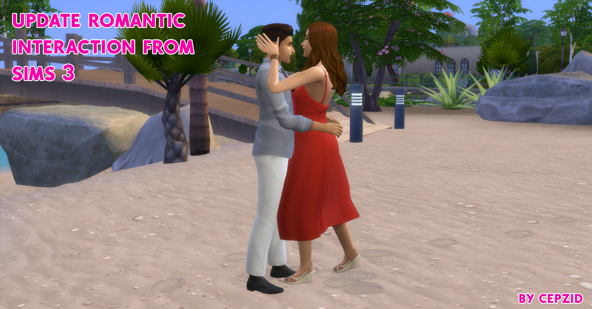
Romantic Interaction Addition
浪漫互動附加內容
備用載點 ｜無
所需DLC ｜無
下載版本 ｜v3
下載日期 ｜2025.11.09
需下載XML注入器
2種版本請擇一下載
RomanticInteractionAddition
⤷ 小人自主行動版本
RomanticInteractionAddition _NoAutonomous
⤷ 玩家控制版本
2種版本請擇一下載
RomanticInteractionAddition
⤷ 小人自主行動版本
RomanticInteractionAddition _NoAutonomous
⤷ 玩家控制版本
Lie On Lap Interaction
躺在膝上互動
備用載點 ｜無
所需DLC ｜無
下載版本 ｜v2
下載日期 ｜2025.11.09
需下載XML注入器
漢化版本 兼容 v2版本
漢化版本 兼容 v2版本

extended phone calls
長時間通話
備用載點 ｜無
所需DLC ｜怦然心動 (非必要)
下載版本 ｜無
下載日期 ｜2026.06.02
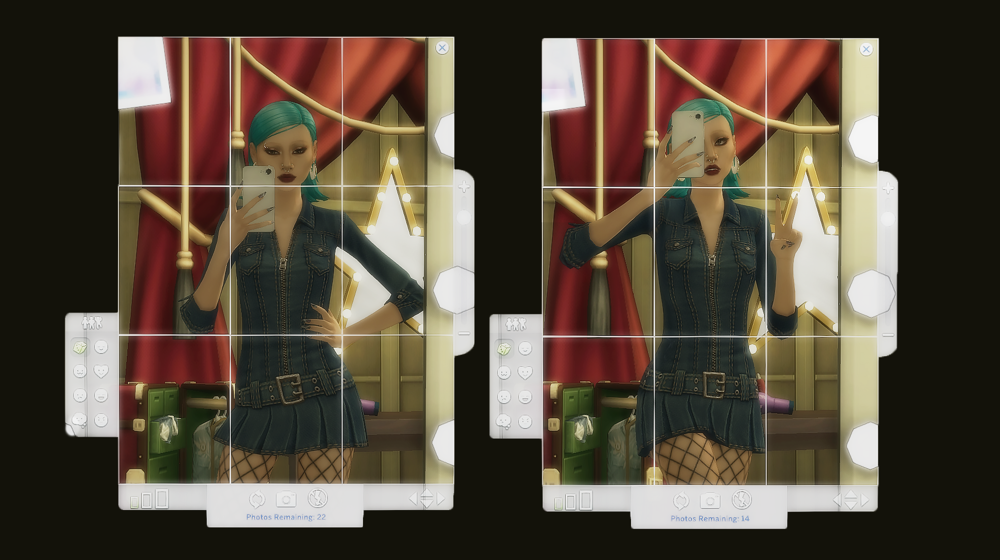
mirror selfie
對鏡自拍
備用載點 ｜無
所需DLC ｜無
下載版本 ｜v1.2
下載日期 ｜2026.05.25
需下載XML注入器
包含女性化與男性化各 25 種自拍姿勢 (共 50 種)
其他附加檔案
simkatu_mirrorphoto_posepack_male.package
⤷ 男性化 25 種自拍姿勢
simkatu_mirrorphoto_posepack_female.package
⤷ 女性化 25 種自拍姿勢
simkatu_mirrorphoto_phone.package
⤷ CAS中人物手機配件 (可用其他作者手機代替)
以下檔案擇一下載
simkatu_mirrorphoto_v2_genderneutral.package
⤷ 中性化，自拍姿勢不限性別混用
simkatu_mirrorphoto.package
⤷ 男性與女性自拍姿勢分開
包含女性化與男性化各 25 種自拍姿勢 (共 50 種)
其他附加檔案
simkatu_mirrorphoto_posepack_male.package
⤷ 男性化 25 種自拍姿勢
simkatu_mirrorphoto_posepack_female.package
⤷ 女性化 25 種自拍姿勢
simkatu_mirrorphoto_phone.package
⤷ CAS中人物手機配件 (可用其他作者手機代替)
以下檔案擇一下載
simkatu_mirrorphoto_v2_genderneutral.package
⤷ 中性化，自拍姿勢不限性別混用
simkatu_mirrorphoto.package
⤷ 男性與女性自拍姿勢分開
Motorbikes with refillable gas tank!
可加注汽油的摩托車
備用載點 ｜無
所需DLC ｜無
下載版本 ｜v1.2
下載日期 ｜2026.05.24
需下載XML注入器
Travel To Venue
前往特殊和隱藏地段
備用載點 ｜無
所需DLC ｜需要有對應地段的DLC
下載版本 ｜[Version 1.7]
下載日期 ｜2026.06.01
在手機上的新功能
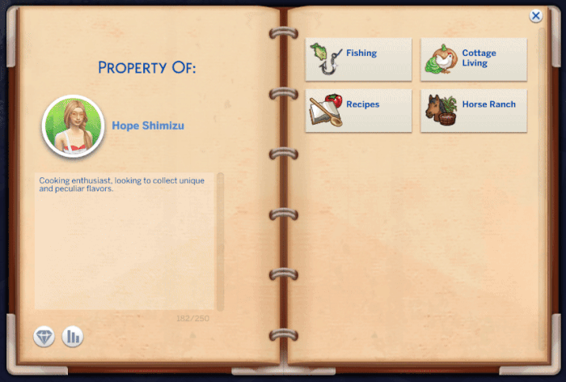
Recipe Notebook
筆記本食譜
需下載XML注入器
Turbo Careers Mod
開放式職業模組包
需下載自定義場地
將所有早期兔子洞的成人職業
(特務、宇航員、運動員、商業、作家、科技達人、演藝人員、畫家 )
以及兩個青少年職業 (快餐和咖啡師 )
轉變為開放 (可跟隨 )職業
將所有早期兔子洞的成人職業
(特務、宇航員、運動員、商業、作家、科技達人、演藝人員、畫家 )
以及兩個青少年職業 (快餐和咖啡師 )
轉變為開放 (可跟隨 )職業


Dental Care
牙科護理
需下載Lumpinou心情模組、通用選單
漢化版本v7.2 兼容 v7.7版本
非必要DLC
來去上班、毛骨悚然 ➜ 藥物動畫
漢化版本v7.2 兼容 v7.7版本
非必要DLC
來去上班、毛骨悚然 ➜ 藥物動畫

Get to Work Health Overhaul
健康大修
若同時下載醫療保健模組則刪除
(後綴 ) MODULE_Allergies.package
&
(後綴 ) Injury.package
&
(後綴 ) Pregnancy.package
其他非必要DLC
春夏秋冬、綠色生活、灰塵大戰 ➜ 過敏功能
(後綴 ) MODULE_Allergies.package
&
(後綴 ) Injury.package
&
(後綴 ) Pregnancy.package
其他非必要DLC
春夏秋冬、綠色生活、灰塵大戰 ➜ 過敏功能

Healthcare Redux
醫療保健
需下載Lumpinou心情模組、通用選單
模組主體壓縮檔已包含通用選單在內
( adeepindigo_base_generalpiemenus_v3.package )
CORE.package 和 .ts4script ➜ 必裝核心檔案
Mesh_Required檔案必須安裝
其他非必要DLC
貓狗總動員 ➜ 動物皮屑過敏
春夏秋冬 ➜ 季節性過敏、季節性情感障礙
綠色生活、灰塵大作戰 ➜ 季節性 / 一般過敏和氣喘
雪國勝地 ➜ 受傷、圖標、增益和藥物
毛骨悚然 ➜ 藥物動畫
模組主體壓縮檔已包含通用選單在內
( adeepindigo_base_generalpiemenus_v3.package )
CORE.package 和 .ts4script ➜ 必裝核心檔案
Mesh_Required檔案必須安裝
其他附加檔案 (可根據自己的需求刪減 )
Allergies (過敏 )
⤷ 模擬市民會產生過敏
Conditions (環境 )
⤷ 模擬市民會患上慢性病
Emergencies (醫療緊急情況 )
⤷ 闌尾炎、動脈瘤和心臟病現在都包含在醫療緊急情況下
Injuries (受傷 )
⤷ 模擬市民會受到輕微和嚴重的傷害
Gynecology (婦科 )
⤷ 模擬市民會有婦科檢查和婦科問題
Pregnancy (懷孕 )
⤷ 模擬市民能夠參加產前和產後護理，可能發生妊娠併發症，並有產後憂鬱
Medications資料夾
⤷ 不可刪除，藥品檔案。包含 Sandy/ATS 的功能性藥物
Optional Addons資料夾
AJNebula_CochlearImplant_Meshes
⤷ 可穿戴的人工耳蝸；現已作為可穿戴的醫療設備供應
CochlerImplants_Auto
⤷ 自動添加中性顏色的人工耳蝸；模擬市民獲得人工耳蝸時自動添加中性顏色。否則，將根據需要添加任何在CAS中的樣式。
DiabetesGlucoseMonitor
⤷ 糖尿病血糖儀；所有得到糖尿病的病患將會自動獲得血糖儀
DiseaseImmunityChance
⤷ 疾病免疫；模擬市民有機會會獲得疾病免疫的特徵，有此特徵的人物將不會獲得疾病。
OPTIONAL_MedicationReminder
⤷ 藥物提醒功能
ModDeath _GlobalDisabler
⤷ 死亡全局禁用功能；所有的模擬市民不會因為此模組的疾病而死亡
⤷ 模擬市民會產生過敏
Conditions (環境 )
⤷ 模擬市民會患上慢性病
Emergencies (醫療緊急情況 )
⤷ 闌尾炎、動脈瘤和心臟病現在都包含在醫療緊急情況下
Injuries (受傷 )
⤷ 模擬市民會受到輕微和嚴重的傷害
Gynecology (婦科 )
⤷ 模擬市民會有婦科檢查和婦科問題
Pregnancy (懷孕 )
⤷ 模擬市民能夠參加產前和產後護理，可能發生妊娠併發症，並有產後憂鬱
Medications資料夾
⤷ 不可刪除，藥品檔案。包含 Sandy/ATS 的功能性藥物
Optional Addons資料夾
AJNebula_CochlearImplant_Meshes
⤷ 可穿戴的人工耳蝸；現已作為可穿戴的醫療設備供應
CochlerImplants_Auto
⤷ 自動添加中性顏色的人工耳蝸；模擬市民獲得人工耳蝸時自動添加中性顏色。否則，將根據需要添加任何在CAS中的樣式。
DiabetesGlucoseMonitor
⤷ 糖尿病血糖儀；所有得到糖尿病的病患將會自動獲得血糖儀
DiseaseImmunityChance
⤷ 疾病免疫；模擬市民有機會會獲得疾病免疫的特徵，有此特徵的人物將不會獲得疾病。
OPTIONAL_MedicationReminder
⤷ 藥物提醒功能
ModDeath _GlobalDisabler
⤷ 死亡全局禁用功能；所有的模擬市民不會因為此模組的疾病而死亡
其他非必要DLC
貓狗總動員 ➜ 動物皮屑過敏
春夏秋冬 ➜ 季節性過敏、季節性情感障礙
綠色生活、灰塵大作戰 ➜ 季節性 / 一般過敏和氣喘
雪國勝地 ➜ 受傷、圖標、增益和藥物
毛骨悚然 ➜ 藥物動畫
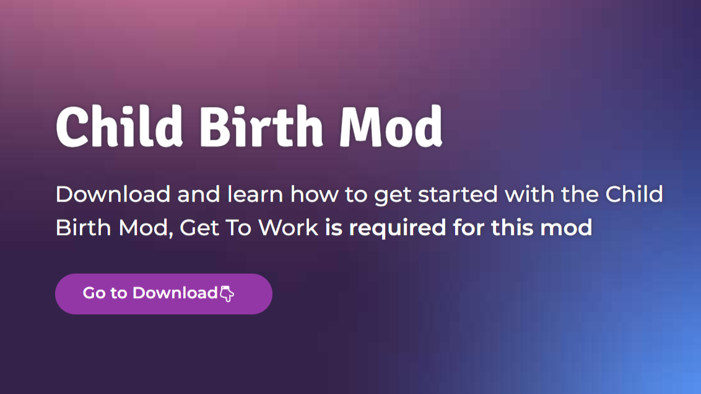
Child Birth
現實分娩
備用載點 ｜無
所需DLC ｜來去上班
下載版本 ｜v1.96
下載日期 ｜2026.05.31
漢化版本v1.91 兼容 v1.96版本
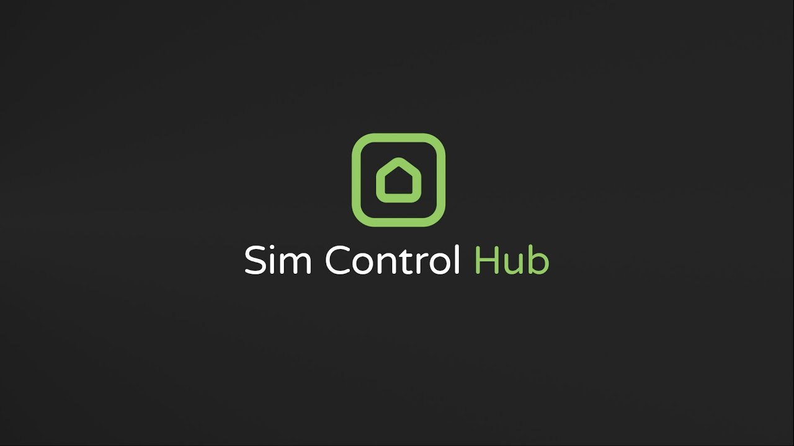
Sim Control Hub
模擬市民控制中心
可將其他家庭的小人加入控制，一次控制多位小人
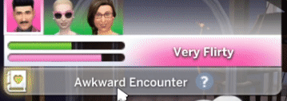
Remove Sims From Conversations
剔除不想要聊天對象
滑鼠右鍵即可移除
Come In & Stick Around
請進！請留步
備用載點 ｜無
下載版本 ｜1.108.349
下載日期 ｜2025.11.10
需下載LOT51核心庫
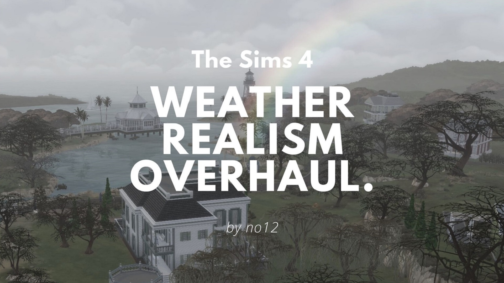
Weather Realism Overhaul
真實天氣
Fahrenheit為華氏，請依個人習慣擇一下載
No More Gender Neutral Relationships
不再有中性的關係稱呼
備用載點 ｜無
下載版本 ｜1.117.227
下載日期 ｜2025.11.13
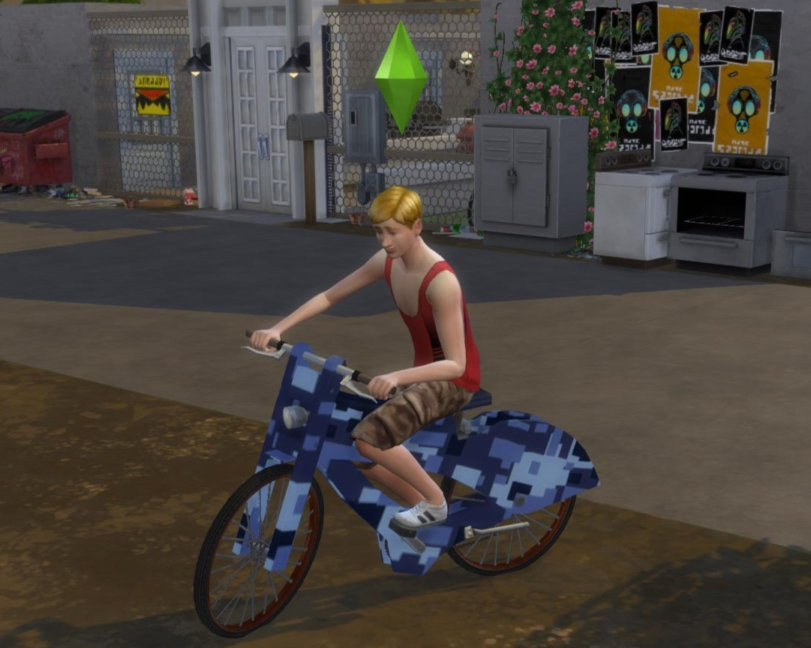
(No) Bicycle Helmet
騎車不戴安全帽
Higher Distance for Sim Call Over
呼叫距離更遠

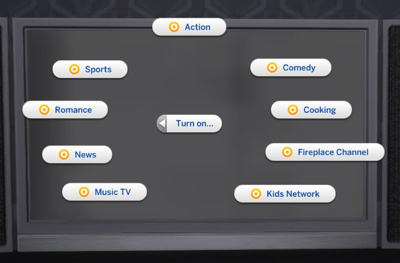
Turn On TV
持續打開電視
市民離開後電視會繼續播放，不會自動關閉 (只能手動關閉)
No Censor Blur Mosaic
去除所有馬賽克
僅去除馬賽克，不是裸體!!!
與邪惡紳士相容
與邪惡紳士相容